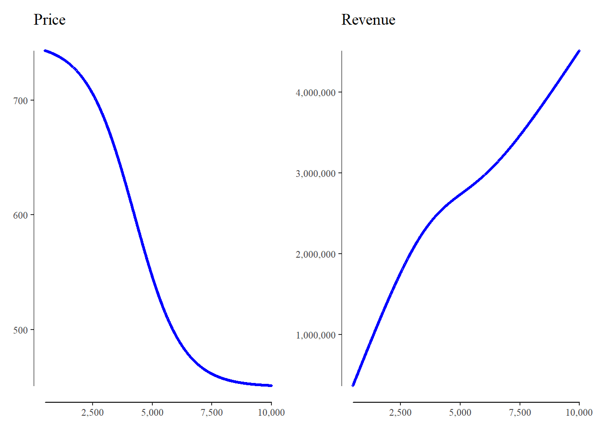

Business Case
Matthias Uckert
28 May, 2022
In this session we will translate the logic of our business case into R. The output will be a static HTML report. R will give us more flexibility and performance advantages in comparison to Excel. The transition might be challenging at first, but if done accurately, functions in R can be re-used in many other cases.
In the following we will mimic the functionalities of the Excel Business case.
Define Input Functions
To derive our our profitability of our product, we first must define some input function. Namely, we need a function that defines the Variable Costs, Product Fixed Costs, and Revenue
Function: Variable Cost
We define a function for the Variable Costs: fnc_var_cost() with the following Input Parameters:
.cv (Variable Cost): Initial Variable
.v (Volume): The volume we want to derive the total variable cost for.
.vb (Base Volume): The base (minimum) volume. for ever additional x (.vd) volume we get an y (.d) discount on our variable cost.
.vc (Cap Volume): The cap (maximum) volume. After this volume no discount is granted anymore.
.vd (Volume Discount): For ever x (.vd) additional unit over the base volume (.vb) we get an y (.d) percent discount.
.d (Discount): The discount we get for ever x (.vd) additional unit over the base volume (.vb)
fnc_var_disc <- function(.v, .vb, .vc, .vd, .d) {
vu_ <- dplyr::case_when(
.v < .vb ~ .vb,
.v > .vc ~ .vc,
TRUE ~ .v
)
floor((vu_ - .vb) / .vd) * .d
}
fnc_var_unit <- function(.cv, .v, .vb, .vc, .vd, .d) {
disc_ <- fnc_var_disc(.v, .vb, .vc, .vd, .d)
.cv * (1 - disc_)
}
fnc_var_cost <- function(.cv, .v, .vb, .vc, .vd, .d) {
.v * fnc_var_unit(.cv, .v, .vb, .vc, .vd, .d)
}For convenience we added two helper functions fnc_var_disc() and fnc_var_unit() that calculate the discount as a function of volume and the unit cost of our product. Those functions will result in so-called Step Functions. Next we plot this functions with the following values:
.cv (Variable Cost): 1
.v (Volume): Range between 500 and 10,000
.vb (Base Volume): 2,500
.vc (Cap Volume): 7,500
.vd (Volume Discount): 1,000
.d (Discount): 5.00%

Function: Fixed Cost
We define a function for the Fixed Costs: fnc_var_cost() with the following Input Parameters:
.cf (Variable Cost): Initial Fixed Costs
.v (Volume): The volume we want to derive the total variable cost for.
.vm (Volume Multiplier): Fixed Cost double at this point
fnc_fix_mult <- function(.v, .vm) {
ceiling(.v / .vm)
}
fnc_fix_cost <- function(.cf, .v, .vm) {
.cf * fnc_fix_mult(.v, .vm)
}
fnc_fix_unit <- function(.cf, .v, .vm) {
(.cf * fnc_fix_mult(.v, .vm)) / .v
}For convenience we added two helper functions fnc_fix_disc() and fnc_fix_unit() that calculate the multiplier as a function of volume and the directly attributable unit fix cost of our product. Next we plot this functions with the following values:
.cf (Fixed Cost): 1
.v (Volume): Range between 500 and 10,000
.vm (Volume Multiplier): 1,000
Function: Price (Revenue)
We define a function for the Revenue: fnc_rev() with the following Input Parameters:
.v (Volume): The volume we want to derive the total variable cost for.
.p (Price): Initial Price
To do so, we first model the price as a function of volume by using a so-called sigmoid function.
We limit the resulting S-Curve between .6 to 1. The idea behind this is, that for every addition unit we want to sell, we have to lower the price by a certain amount.
fnc_rev_sigmoid <- function(.v) {
(1 - (1 / (1 + exp(-((.v / 1000) - 4.25))))) * .4 + .6
}
fnc_rev_unit <- function(.p, .v) {
.p * fnc_rev_sigmoid(.v)
}
fnc_rev <- function(.p, .v) {
.v * fnc_rev_unit(.p, .v)
}Next we plot this functions with the following values:
.p(Price): 750
.v (Volume): Range between 500 and 10,000

Define Other Functions
After we defined the input functions for variable cost, fixed cost and price, we will program functions that give us the the contribution margins and the profit of our business case. We will use a dataframe logic which is very similar to Excel, but with significant more flexibility.
Function: Input Table
First we define a function with all the input variables, specifically: .v (Volume), .p (Price), .cv (Variable Cost), .cf (Fixed Cost), .vb (Base Volume - for Variable Cost), .cv (Cap Volume - for Variable Cost), .vd (Volume Discount - for Variable Cost), .d (Discount - for Variable Cost), .vm (Volume Multiplier - for Fixed Cost), .ca (Company Cost).
get_input_table <- function(.v = 0, .p = 0, .cv = 0, .cf = 0, .vb = 0, .vc = 0,
.vd = 0, .d = 0, .vm = 0, .ca = 0) {
tibble::tibble(
v = .v, p = .p, cv = .cv, cf = .cf, ca = .ca, vb = .vb, vc = .vc,
vd = .vd, d = .d, vm = .vm,
)
}
get_input_table(.v = 7500, .p = 750, .cv = 500, .cf = 50000, .vb = 3000, .vc = 8000,
.vd = 750, .d = .05, .vm = 1000, .ca = 250000)## # A tibble: 1 x 10
## v p cv cf ca vb vc vd d
## <dbl> <dbl> <dbl> <dbl> <dbl> <dbl> <dbl> <dbl> <dbl>
## 1 7500 750 500 50000 250000 3000 8000 750 0.05
## # ... with 1 more variable: vm <dbl>Function: Profit
Next we define a function that calculates the Contribution Margins and the Profit for our input factor. This function takes a dataframe as only argument which is the dataframe we produce with the function get_input_table()
get_input_table(.v = 7500, .p = 750, .cv = 500, .cf = 50000, .vb = 3000, .vc = 8000,
.vd = 750, .d = .05, .vm = 1000, .ca = 250000) %>%
get_profit()## # A tibble: 1 x 22
## v p cv cf ca vb vc vd d
## <dbl> <dbl> <dbl> <dbl> <dbl> <dbl> <dbl> <dbl> <dbl>
## 1 7500 750 500 50000 250000 3000 8000 750 0.05
## # ... with 13 more variables: vm <dbl>, discount <dbl>,
## # var_unit <dbl>, var_cost <dbl>, multiple <dbl>,
## # fix_unit <dbl>, fix_cost <dbl>, sigmoid <dbl>,
## # price <dbl>, revenue <dbl>, cm1 <dbl>, cm2 <dbl>,
## # profit <dbl>Functions: Other
We also make some functions that will help us to reshape the data.
get_cm_table <- function(.tab) {
.tab %>%
get_profit() %>%
dplyr::select(
Revenue = revenue,
`Variable Cost` = var_cost,
`Contribution Margin I` = cm1,
`Fixed Cost` = fix_cost,
`Contribution Margin II` = cm2,
`Company Cost` = ca,
`Profit` = profit
) %>%
tidyr::pivot_longer(cols = dplyr::everything()) %>%
dplyr::mutate(
perc = value / first(value),
value = scales::comma(value),
perc = scales::percent(perc)
)
}
get_amortization <- function(.tab, .years, .invest, .discount) {
.tab %>%
tidyr::expand_grid(year = seq_len(.years)) %>%
dplyr::select(year, dplyr::everything()) %>%
get_profit() %>%
dplyr::mutate(dcf = profit / ((1 + .discount)^year)) %>%
dplyr::select(year, dcf) %>%
tibble::add_row(year = 0, dcf = -.invest) %>%
dplyr::arrange(year) %>%
dplyr::mutate(csum = cumsum(dcf)) %>%
dplyr::mutate(
col1 = dplyr::if_else(csum < 0, "red", "green"),
col2 = dplyr::if_else(dcf < 0, "red", "green")
) %>%
dplyr::select(year, dcf, csum, col1, col2)
}CM I, CM II, and Profit
Using the Functions get_input_table(), get_profit(), and get_cm_table(), we can show a scenario analysis for the Contribution Margin and Profit.
tab_ <- get_input_table(
.v = .def_v, .p = .def_p, .cv = .def_cv, .cf = .def_cf,
.vb = .def_vb, .vc = .def_vc, .vd = .def_vd, .d = .def_d,
.vm = .def_vm, .ca = .def_ca
)
s1 <- mutate(tab_, v = 2500) %>%
get_profit() %>%
get_cm_table() %>%
rename(`# 2,500` = value, `% 2,500` = perc)
s2 <- mutate(tab_, v = 5000) %>%
get_profit() %>%
get_cm_table() %>%
rename(`# 5,000` = value, `% 5,000` = perc)
s3 <- mutate(tab_, v = 7500) %>%
get_profit() %>%
get_cm_table() %>%
rename(`# 7,500` = value, `% 7,500` = perc)
s4 <- mutate(tab_, v = 10000) %>%
get_profit() %>%
get_cm_table() %>%
rename(`# 10,000` = value, `% 10,000` = perc)
s1 %>%
left_join(s2, by = "name") %>%
left_join(s3, by = "name") %>%
left_join(s4, by = "name") %>%
kableExtra::kbl(align = "lcccccc", col.names = NULL) %>%
kableExtra::kable_paper(html_font = "Times New Roman") %>%
kableExtra::column_spec(column = c(1, 3, 5, 7), border_right = TRUE) %>%
kableExtra::row_spec(row = c(1, 3, 5, 7), bold = TRUE) %>%
kableExtra::add_header_above(
c(" " = 1, "Volume: 2,500" = 2, "Volume: 5,000" = 2, "Volume: 7,500" = 2, "Volume: 10,000" = 2)
)|
Volume: 2,500
|
Volume: 5,000
|
Volume: 7,500
|
Volume: 10,000
|
|||||
|---|---|---|---|---|---|---|---|---|
| Revenue | 1,763,965 | 100.0% | 2,731,232 | 100.00% | 3,458,985 | 100.00% | 4,509,518 | 100.00% |
| Variable Cost | 1,250,000 | 70.9% | 2,250,000 | 82.38% | 2,625,000 | 75.89% | 3,500,000 | 77.61% |
| Contribution Margin I | 513,965 | 29.1% | 481,232 | 17.62% | 833,985 | 24.11% | 1,009,518 | 22.39% |
| Fixed Cost | 150,000 | 8.5% | 250,000 | 9.15% | 400,000 | 11.56% | 500,000 | 11.09% |
| Contribution Margin II | 363,965 | 20.6% | 231,232 | 8.47% | 433,985 | 12.55% | 509,518 | 11.30% |
| Company Cost | 250,000 | 14.2% | 250,000 | 9.15% | 250,000 | 7.23% | 250,000 | 5.54% |
| Profit | 113,965 | 6.5% | -18,768 | -0.69% | 183,985 | 5.32% | 259,518 | 5.75% |
Sensitivity
Next we look at the sensitivity of the profit to the input factors: Volume, Price, Variable Cost, Fixed Cost, and Volume Discount. We don’t need to program an new function for this. The vectorized functions we defined up until now are sufficient, the only thing we need to do is adding a range for the input variable we want to observe to the get_input_table() function.
.seq <- seq(500, 10000, 25)
get_input_table(
.v = .seq, .p = .def_p, .cv = .def_cv, .cf = .def_cf,
.vb = .def_vb, .vc = .def_vc, .vd = .def_vd, .d = .def_d,
.vm = .def_vm, .ca = .def_ca
) %>%
get_profit() %>%
plot_profits(v, profit, .xlab = "Volume", "Profit", "Profit (Volume)", .size = 11)
.seq <- seq(500, 1000, 5)
get_input_table(
.v = .def_v, .p = .seq, .cv = .def_cv, .cf = .def_cf,
.vb = .def_vb, .vc = .def_vc, .vd = .def_vd, .d = .def_d,
.vm = .def_vm, .ca = .def_ca
) %>%
get_profit() %>%
plot_profits(p, profit, .xlab = "Price", "Profit", "Profit (Price)", .size = 11).seq <- seq(250, 1000, 5)
get_input_table(
.v = .def_v, .p = .def_p, .cv = .seq, .cf = .def_cf,
.vb = .def_vb, .vc = .def_vc, .vd = .def_vd, .d = .def_d,
.vm = .def_vm, .ca = .def_ca
) %>%
get_profit() %>%
plot_profits(cv, profit, .xlab = "Variable Cost", "Profit", "Profit (Variable Cost)", .size = 11)
.seq <- seq(25000, 100000, 1000)
get_input_table(
.v = .def_v, .p = .def_p, .cv = .def_cv, .cf = .seq,
.vb = .def_vb, .vc = .def_vc, .vd = .def_vd, .d = .def_d,
.vm = .def_vm, .ca = .def_ca
) %>%
get_profit() %>%
plot_profits(cf, profit, .xlab = "Fixed Cost", "Profit", "Profit (Fixed Cost)", .size = 11)
.seq <- seq(.01, .1, .001)
get_input_table(
.v = .def_v, .p = .def_p, .cv = .def_cv, .cf = .def_cv,
.vb = .def_vb, .vc = .def_vc, .vd = .def_vd, .d = .seq,
.vm = .def_vm, .ca = .def_ca
) %>%
get_profit() %>%
plot_profits(d, profit, .xlab = "Discount", "Profit", "Profit (Discount)", .size = 11)
Amortization
With the function get_amortization(), we can easily plot the amortization time of our business case. Again this function takes the dataframe of get_input_table() as input. Additionally, it has other 3 Arguments: .years (NUmber of Years to plot), .invest (Initial Investment), .discount (Required Rate of Return)

Monte Carlo
Up until here, everything we did you could also have done in Excel (and most of it we have in our Excel Business Case). One aspect we cannot do in Excel (At least not without VBA, or Add-Ins) is to perform a Monte Carlo Analysis. Given that we have many input factors, and some of our inputs are related non-linearly to other inputs, it is a priori not clear how profitable out business case is under specific assumption. A Monte Carlo Analysis will help us to evaluate this, by simulating random inputs (with defined probability distributions) and calculates the profit. With this we can observe the profit distribution and get a feeling how robust our business model is to changing input factors (uncertainty).

| Profit > 0 | 53% |
| Profit < 0 | 47% |
| Mean | 118,780 |
| Median | 89,773 |
| Minimum | -13,204,871 |
| Maximum | 8,942,726 |